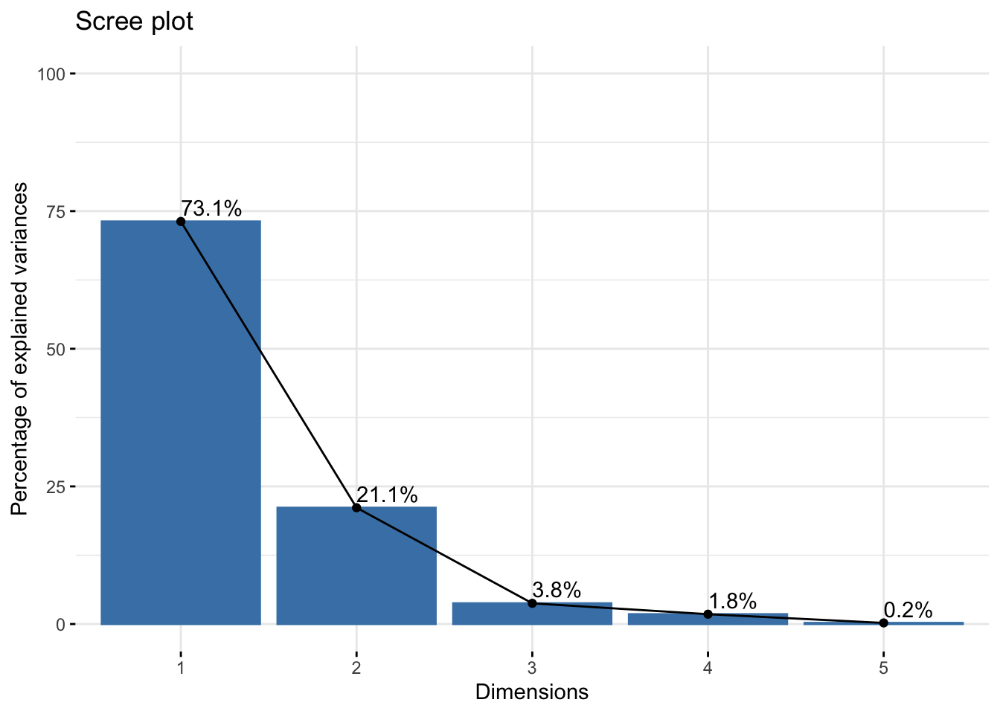
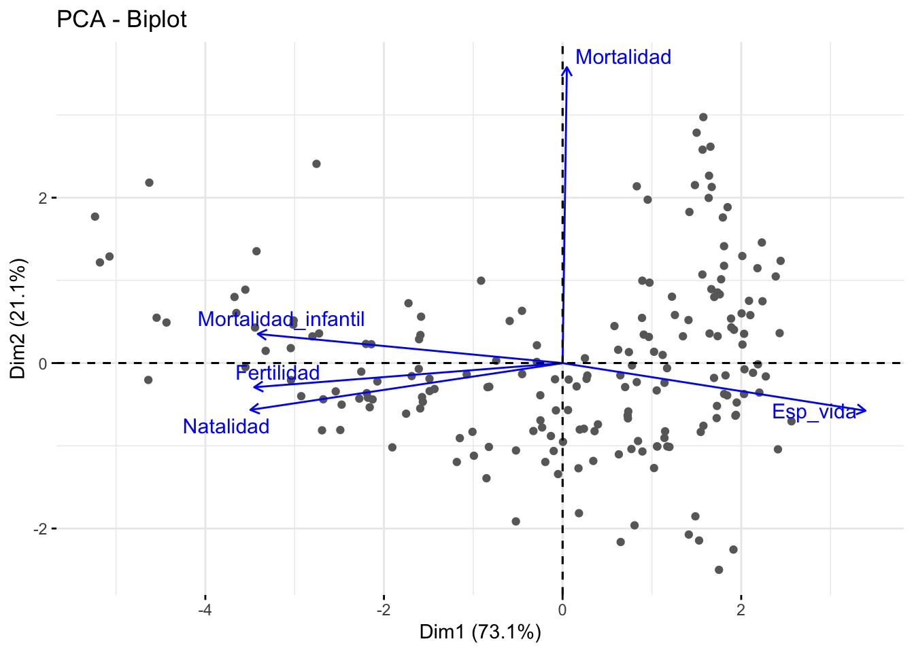
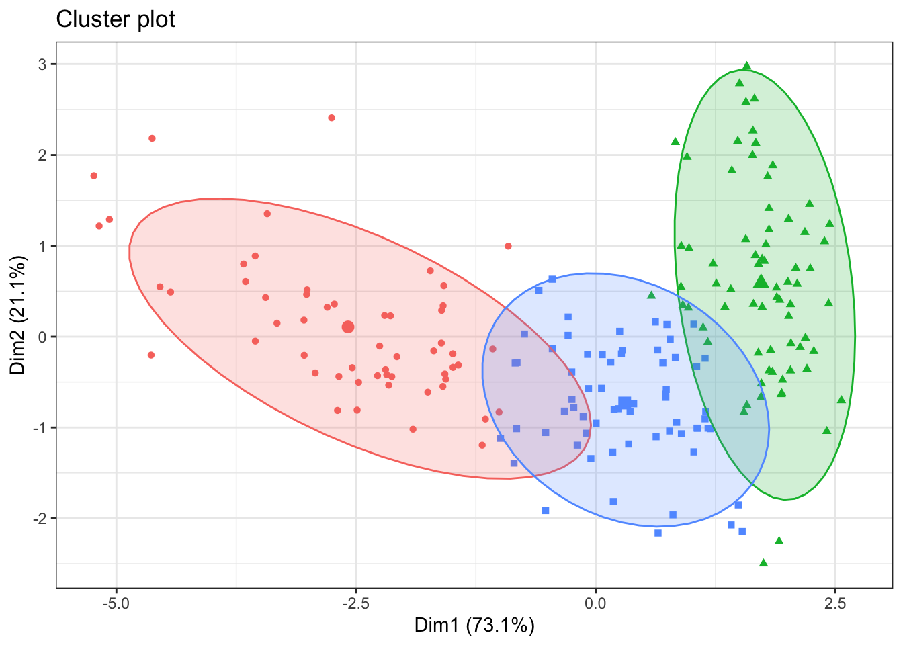

Rows: 1,073
Columns: 14
$ Country <chr> "Afghanistan", "Afghanistan", "Afghanistan", "…
$ Year <dbl> 2017, 2018, 2019, 2020, 2021, 2017, 2018, 2019…
$ `Total Population` <chr> "-", "36,686,784", "37,769,499", "38,972,230",…
$ `Urban Population` <chr> "-", "9,353,296", "9,727,157", "10,142,913", "…
$ `Rural Population` <chr> "-", "27,333,488", "28,042,342", "28,829,317",…
$ `Population Density` <chr> "55", "56", "58", "60", "-", "105", "105", "10…
$ `Life Expectancy` <chr> "63.0", "63.0", "64.0", "63.0", "62.0", "79.0"…
$ `Birth Rate` <dbl> 37.342, 36.927, 36.466, 36.051, 35.842, 10.870…
$ `Death Rate` <dbl> 7.027, 6.981, 6.791, 7.113, 7.344, 8.150, 8.30…
$ `Fertility Rate` <chr> "5.129", "5.002", "4.87", "4.75", "4.643", "1.…
$ `Infant Mortality Rate` <chr> "49.4", "47.8", "46.3", "44.8", "43.4", "8.3",…
$ `Growth Rate` <chr> "-", "3.0", "3.0", "3.0", "3.0", "-", "0.0", "…
$ Continent <chr> "Asia", "Asia", "Asia", "Asia", "Asia", "Europ…
$ Area_km2 <dbl> 652230, 652230, 652230, 652230, 652230, 28748,…Práctica clustering
Introducción
El objetivo de esta práctica consiste en realizar un análisis de clustering y el análisis de componentes principales, para ello, recuperamos nuestros datos demogràficos de la pràctica 3. Recordemos que en el análisis exploratorio, si agrupábamos los datos por la variable Año, no había grandes diferencias entre los tres años resultantes, por ello, vamos a considerar solo el año 2019 para llevar a cabo nuestro estudio. Por último, las variables de las que nos ocuparemos son: esperanza de vida,natalidad,mortalidad,mortalidad infantil y fertilidad.
Carga de datos de la exposición
Análisis de componentes principales
Realicemos un análisis de componentes principales; empezaremos seleccionando los datos numéricos de nuestra tabla de datos. Además, debemos tener en cuenta que nuestros datos no se encuentran en la mismas unidades, por lo tanto és necesario reescalarlos.
Rows: 191
Columns: 5
$ Esp_vida <int> 64, 79, 76, 62, 79, 77, 75, 83, 82, 73, 71, 80, 73…
$ Natalidad <dbl> 36.466, 10.343, 23.298, 39.725, 11.485, 14.783, 12…
$ Mortalidad <dbl> 6.791, 8.480, 4.392, 7.811, 5.865, 7.600, 9.662, 6…
$ Mortalidad_infantil <dbl> 46.3, 8.4, 20.1, 50.4, 5.5, 7.6, 10.5, 3.2, 2.9, 1…
$ Fertilidad <dbl> 4.870, 1.414, 2.988, 5.442, 1.468, 1.994, 1.575, 1…datos_escalados <- scale(datos_numericos)
continentes <- data.frame(datos_numericos_continente$Continente)
datos_escalados_continente <- cbind(datos_escalados, continentes) ## data frame con la variable de perfil ContinenteEmpezamos ahora con el PCA, utilizamos la matriz de correlaciones y la función prcomp() con el parámetro cor igualado a TRUE. Obtenemos lo siguiente:
Standard deviations (1, .., p=5):
[1] 1.91213663 1.02778341 0.43372916 0.29885291 0.09980344
Rotation (n x k) = (5 x 5):
PC1 PC2 PC3 PC4 PC5
Esp_vida 0.493177101 -0.15570963 -0.4766372 0.68584968 0.18697065
Natalidad -0.508315731 -0.15307739 -0.3529211 -0.12189679 0.76076952
Mortalidad 0.006949629 0.96796931 -0.2294373 0.02871237 0.09757683
Mortalidad_infantil -0.496222609 0.09550935 0.4888622 0.71053104 0.02829219
Fertilidad -0.502101871 -0.07896336 -0.5971900 0.09525037 -0.61314763Para entenderlo mejor, obtenemos los valores propios de cada componente:
eigenvalue variance.percent cumulative.variance.percent
Dim.1 3.656266497 73.1253299 73.12533
Dim.2 1.056338735 21.1267747 94.25210
Dim.3 0.188120982 3.7624196 98.01452
Dim.4 0.089313060 1.7862612 99.80079
Dim.5 0.009960726 0.1992145 100.00000Observamos que para explicar el 94% de los datos tendríamos que escoger dos componentes principales. Cabe mencionar que añadir una componente más no nos proporciona información relevante en cuanto a la representación de las variables.
Esto lo visualizamos mejor en el siguiente gráfico:

Vemos que la pendiente entre la primer y la segunda componentes principales és mucho más pronunciada que el resto. Así, reafirmamos nuestra decisión de considerar dos componentes principales. En el siguiente gráfico vemos como quedarían representadas cada una de las variables en el círculo de correlación variable.
En el siguiente gráfico vemos como quedarían representadas cada una de las variables en el círculo de correlación variable.

Vamos a explicarlo detalladamente: sabemos que las variables que muestran correlación positiva se agrupan, mientras que las que se muestran opuestas la una a la otra son las que presentan correlación negativa; así pues, tal y como vimos en la primera parte de este estudio, Mortalidad infantil, Fertilidad y Natalidad están correlacionadas positivamente, mientras que Mortalidad infantilidad y Esperanza de vida presentan correlación negativa. Además, el color de las variables nos indica cuan bien representadas están, por lo tanto, Natalidad y Mortalidad son las que mejor representadas quedan mientras que Mortalidad infantil és la que peor. Por último, la longitud de las flechas indica la influencia de las variables en las componentes principales, por lo tanto, vemos que todas tienen una influencia relevante en nuestro ACP.
Ahora, veamos si podemos obtener una clasificación de los países por grupos a través de las dos componentes principales. (No añadiremos las estiquetas para observar mejor el gráfico)

Como vemos, no hay una separación clara de los países en función de las componentes principales. Para poder analizar más en concreto este punto, consideraremos el siguiente gráfico:
En él, podemos ver los países coloreados en relación a la calidad de representación en el ACP. Los países representados por azul claro tienen una alta representación, mientras que los países con un azul más oscuro no. Vemos que prácticamente todos las observaciones quedan bien representadas. Los países correspondientes a las observaciones más oscuras y por ende peor representadas són: India, Republica Dominicana, Kazakhistan, Nepal, Indonesia, Bután y Tonga.
Una vez realizado el ACP, vamos a visulizar como quedan agrupados los países según su continente:
Lo primero que observamos es que los países de Europa queda agrupados a la derecha del gráfico, es decir, que la variable con más influencia sobre ellos es Esperanza de vida; por el contrario los países africanos se situan a la izquierda del gráfico siendo más representados por las variables Natalidad, Mortalidad y Mortalidad infantil. En cuanto al resto de continentes, no vemos un patrón claro.
Clustering
Recordamos que en nuestros datos teniamos múltiples valores outliers, cosa que nos impide utilizar la distancia euclídea y aplicar el algoritmo k-means. Por ello, utilizaremos la distancia manhattan entre las observaciones y aplicaremos el algoritmo k-medoids.
Primero debemos determinar el número óptimo de clusters que utilizaremos. Veámoslo con el método del codo:
Viendo el gráfico, decidimos utilizar tres clusters.
K-medoids:

Observamos que se repite el patrón que hemos visto en el gráfico autoplot, en este caso, vemos que el cluster verde se adapta bien a los países de Europa, mientras que el cluster rojo engloba los países de África y algunos de Oceanía; por último, el cluster azul toma los países de Ásia, Sudamérica y Norteamérica.
Clustering aglomerativo:
Vamos a ver ahora tres clusters jerárquicos utilizando distintas distancias para determinar cuál de ellas se adapta mejor a nuestros datos. Empezamos utilizando el linkage complete:
Veamos ahora que países encontramos en cada cluster:
Veamos que países encontramos en cada cluster: en el primer cluster (lila) nos encontramos con países de África, Ásia y Oceanía mayoritariamente; el cluster 2 (azul) contiene todos los países de Europa, algunos de Ásia, y gran parte de los países de Norteamérica y Sudamérica; el tercer cluster (verde) contiene mayoritariamente países de Ásia, Sudamérica y Oceanía; finalmente, en el cluster 4 (rojo) encontramos únicamente países de África.
Veamos que ocurre al utilizar el linkage average:
En este caso, se han agrupado en tres clústers; el primero, que es el que tiene menos observaciones corresponde única y exclusivamente a algunos paises de África. Los países de Europa, Asia, Norteamérica y Sudamérica se han agrupado en un clúster y, finalmente, Oceanía y África en otro clúster por separado.
ga <- cutree(hc_average, k=3)
datos_average = data.frame("Pais" =datos_numericos_continente$Pais, "Continente" = datos_numericos_continente$Continente, "Cluster" =ga)
#datos_average %>%
# arrange(Continente)Por último, estudiaremos el linkage ward:
En este caso, hemos decidido considerar 5 clusters, veamos que países cncontramos en cada uno de ellos:
En el primer cluster (verde) encontramos mayoritariamente países de África, y el resto son de Oceanía y Ásia; en el segundo (lila) encontramos mayoritariamente países de África, Norteamérica y Sudamérica y alguno de Europa; en el cluster 3 (rojo) vemos que la mayoría son países de Ásia y Norteamérica; en el cluster 4 (azul) tan solo encontramos países de África; por último, en el quinto cluster (amarillo) vemos que se encuentran prácticamente todos los países de Europa.
Conclusión:
Gracias al ACP realizado hemos visto que los continentes que mejor representados estaban eran Eruopa y África, ambos en lados extremos del gráfico debido a que las variables que actúan con mayor peso sobre los países de estos són justo las que están correlacionadas negativamente, como vimos en la práctica anterior.
A continuación hemos llevado a cabo el clustering para ver si había una agrupación por continentes respecto a las variables dadas. La conclusión no está del todo clara. Por un lado, con el método particional k-medoids hemos visto que los datos se podían agrupar en 3 clústers, correspondientes a los realizados por el ACP. Por otro lado, hemos realizado un clustering jerárquico, utilizando tres linkage diferentes para comprobar cual era el mejor. Hemos obtenido diferentes resultados. Para determinar con cuál nos quedamos, utilizaremos la función cophenetics(). Así, obtenemos los siguientes resultados:
[1] 0.7678405[1] 0.7483935[1] 0.5994604El primer valor corresponde al método complete y vemos que es el que ha obtenido una mayor correlación; por lo tanto, nos quedaremos con los resultados de este. Es decir, los países se agrupan en cuatro clústers.